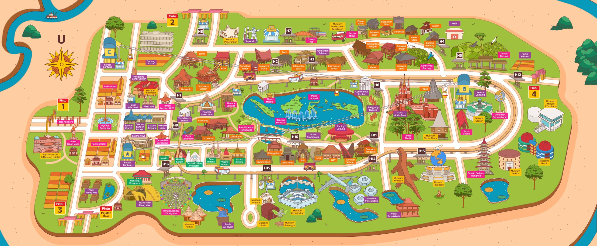
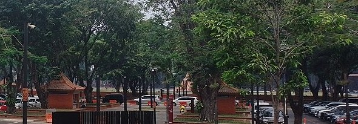
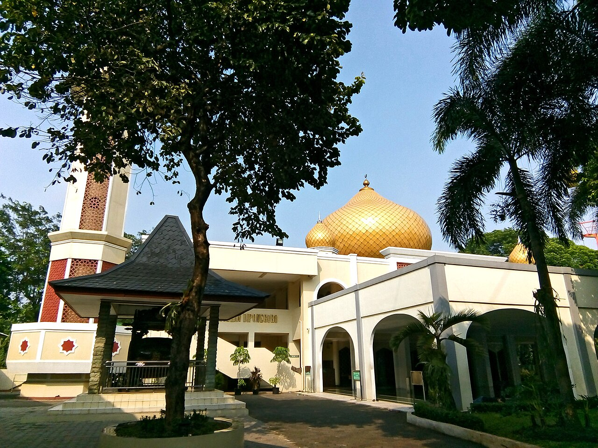
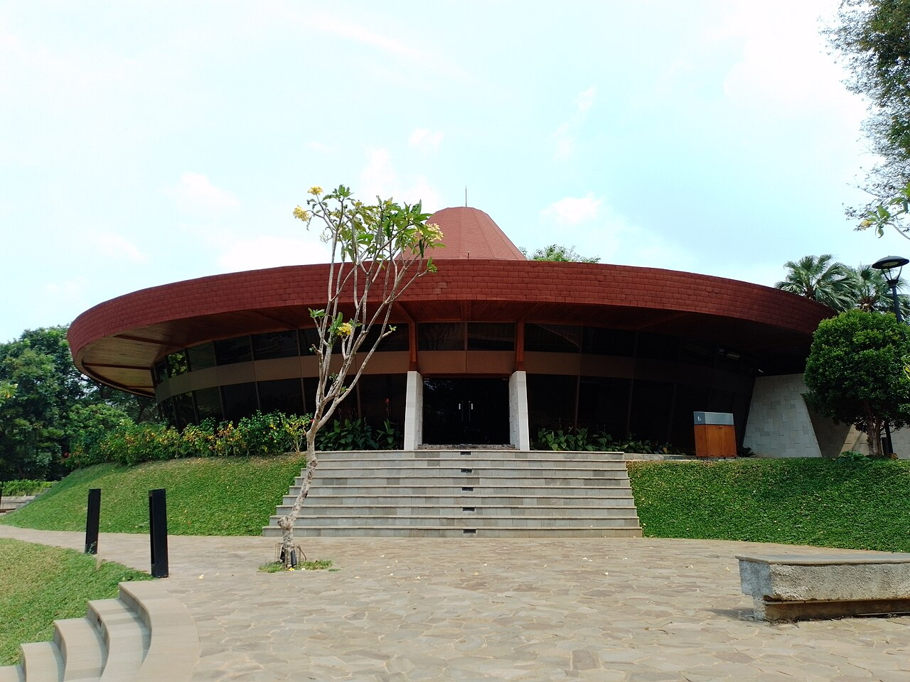
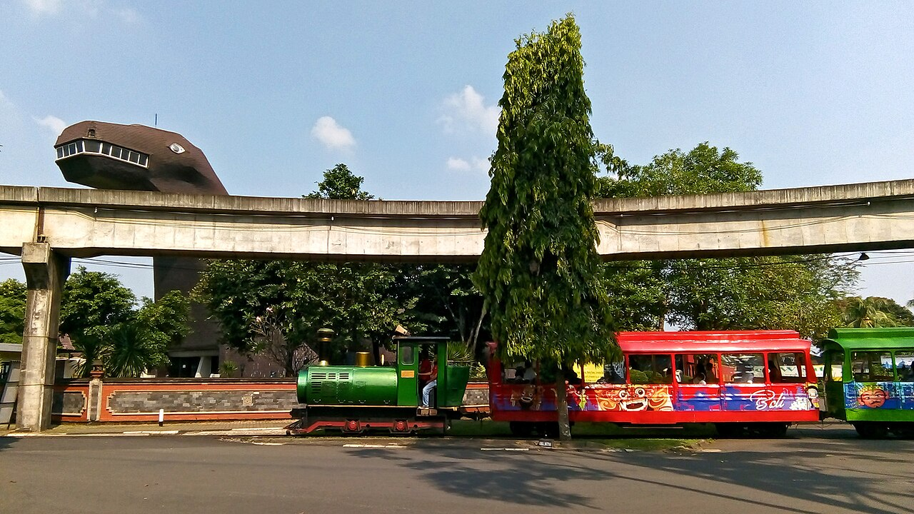
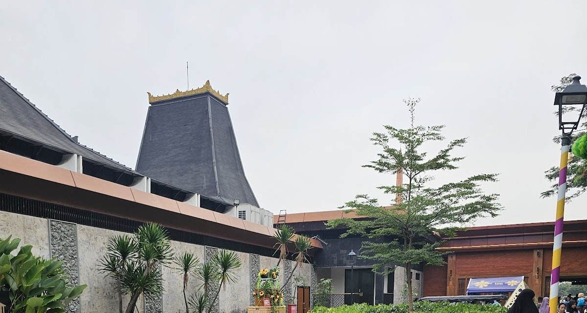
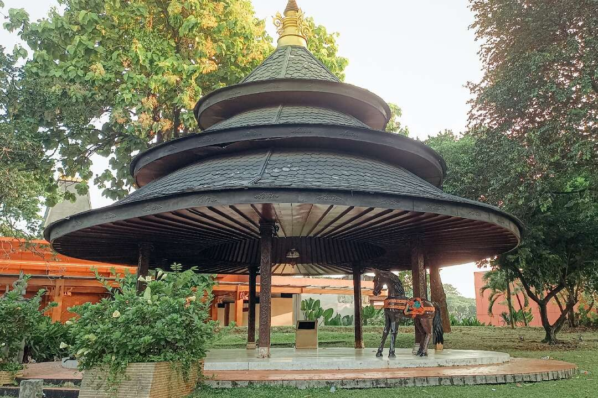

Pilih tiket dan tanggal
Kamu tentukan sendiri wahana mana yang mau dimasukkan.
Satu pesanan untuk tiket masuk, anjungan, museum, dan wahana. Kamu memilih tanggalnya, kami siapkan e-tiketnya, kamu masuk dengan scan QR di gerbang.
Danau Archipelago, miniatur kepulauan Indonesia di tengah kawasan TMII.
Kamu tentukan sendiri wahana mana yang mau dimasukkan.
Cukup nama, nomor WhatsApp, dan email. Tidak perlu buat akun.
QRIS, dompet digital, atau transfer bank.
E-tiket berisi QR dikirim ke email kamu.
Tiga usulan urutan keliling kawasan. Pilih yang cocok dengan waktu dan rombonganmu.
Anak-anak main dan lihat burung dulu, ditutup naik kereta gantung di atas danau.
Lihat wahananyaKeliling rumah adat dan museum, nonton film di Keong Mas, lalu rehat di tepi danau.
Lihat wahananyaDatang sore saat lebih sejuk, naik kereta gantung, lalu duduk santai di tepi danau.
Lihat wahananya
Yang tersedia di dalam kawasan untuk menemani kunjungan kamu.

Tersedia untuk motor, mobil, dan bus rombongan sekolah.

Ada di area anjungan dan titik utama kawasan.

Restoran, kafe, dan pedagang makanan di dalam kawasan.

Angkutan keliling listrik, kereta gantung, dan penyewaan sepeda.

Petugas informasi di dekat gerbang masuk.

Taman dan bangku untuk duduk santai dan piknik keluarga.
Penanda peta berada di kawasan Taman Mini Indonesia Indah, Jakarta Timur.
Pembayaran di situs ini diproses melalui Midtrans. Metode yang tersedia lewat gerbang pembayaran itu antara lain:
Hubungi kami sebelum atau sesudah kunjungan.